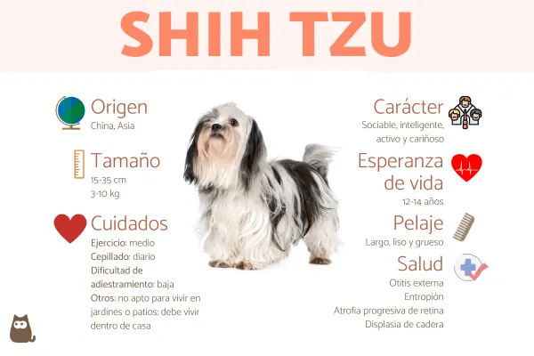

El shih tzu es una de las razas de perros de compañía más sociables y juguetones. Eso sumado a su hermoso pelaje
y dulce apariencia explican el porqué es una de las razas preferidas actualmente. Estos tipos de perros son muy cariñosos e
inteligentes y necesitan una atención constante por parte de sus dueños, así que no están recomendados para vivir fuera
de las casas o para dejarlos mucho tiempo solos.
